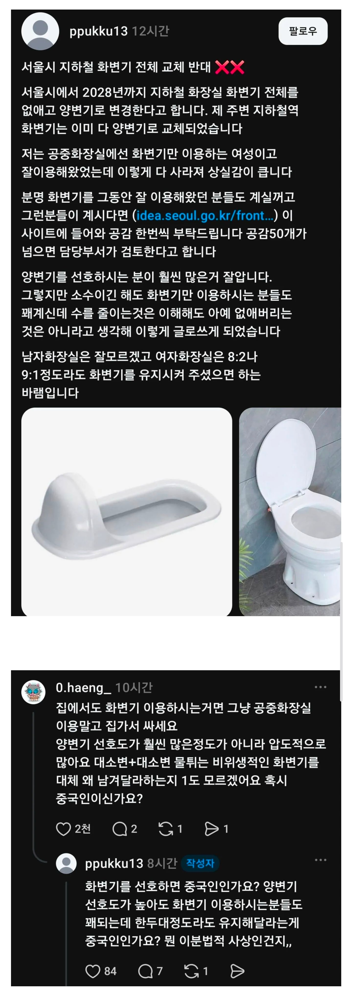

화변기 쓰는 사람이 있나 요새???

화변기 쓰는 사람이 있나 요새???
살면서 딱 한번 써봄 군대유격장에서
푸세식이라고 불렀는데 화변기가 이름이였구나 음...
일본식 변기라고 해서 화변기라 부름
일본애들이 야마토라고 하는 것의 뒷 한자가 우리식 발음으로는 화거든
푸세식은 변기 아래에 똥통이 있는걸 말하는거라
양변기도 푸세식일 수 있음
나는 저거 이름이 화변기라는것도 처음알앗다..
그냥 푸세식똥간 인줄 ㅋㅋ
푸세식은 그냥 아래에 변들이 다 모이는 방식임
저러고일어나면 다리 후들후들해
실제 양변기 출시 후ㅜ변비환자가 많이 늘었다고함
그래서 양변기 위에 올라가서 화변기 처럼 싸는 이유가
그래서 그런거
양변기가 않기 꺼려지는게 있긴 함
앉
지하철같은데서 변비가 심할때 화변기가 효과가 더 좋고, 남들 앉는 곳에 앉고 싶지 않아서 화변기가 있으면 자주 이용하는 편이었음. 지금은 변비가 없지만, 일단 요즘은 화변기도 없는 느낌이라 화변기 사용해본지 진짜 오래되긴했네
난 똥 잘나와서 좋아
의외로 화변기 선호 있는지 화변기 따로 있는 화장실 꽤 됨. 앞에 표시 되어있고.
청소 쉬운 것도 있고 그 자세가 잘 나오는 사람도 있고 할테니 큰 화장실에 하나 정도 있는 건 나쁘지 않을 거 같음.
저게 똥이 잘나옴 게다가 엉덩이 대지 않아도 되지 위생적으로도 안심되기도 하고
공용 변기커버에 살 닿는거 싫어서 커버위에 앉아서 싸는 사람도 있다고....
휴지로 덮으면 되는것을.. 능지가
어디 꽁돈 생기면 화장실에 화변기 하나 놓고 싶긴하다 똥 잘나올텐데
고관절이 안좋아서 힘들어
무릎 와자작
똥 직빵으로 나옴 ㅋ 언젠간 가치를 다시 인정받아서 부흥하는 날이 올 거임 ㅋㅋ
공식 명칭이 화변기 인것도 오늘 앎
쀼다닷
여자는 저기서 소변도 싸니까 소변 보는 용도로는 저게 더 나을 수도있겠다 싶드라
그놈의 소수 소수 시발 ㅋㅋㅋ
이젠 소수가 먼 권력이여?
여자들 얼마나 지저분하게 쓰는지 몰라서그럼 저친구는 화변기가 피부가 안닿으니 더선호하는거야
나 화변기 엉덩이 안닿아서 좋아했는데,,,
앉아싸 변기 -> 양변기, 쪼그려싸 변기 -> 화변기 ... ㅋㅋ
화변기 다리가 아파서 못쓰겠던데
똥은 잘나오는데 진짜 너무 많이 앉아짐
화변기 똥 잘나오고 변기에 ㄱ추 안 닿아서 좋음
근데 내가 싸질러놓은게 너무 적나라하게보여서 ㅈ같음
중화변기
여자들은 양변기도 화변기처럼 쓴다지 않았나? 요샌 또 바꼈나?
더러워서 안앉고 밟고 올라가서 싼다매
중국인이냐는 말에 바로 욕 하면서 반응 안하는거 보니
개좆깨 맞네
한국인이면 저건 패드립임
엉덩이 닿는게 싫어서 공중화장실은 화변기 선호하는 사람이 있다고 듣긴 했는데 비율이 얼마아 되려나
대만도 저거 많긴 하더라....
영어로 스쿼트... 라고 써 있더만...
남자는 구조상 화변기가 좀 그랴...
다리 준내 아픈데 ㅋㅋㅋ
똥싸다 일어났다 일어나서 다리한번 풀고 다시 앉아서 싸고 또 일어나서 다리풀고
참고 계속싸면 다리 전기옴
다리아파서 싫다고
조준 못하면 앞은 오줌 고여있고 뒤엔 똥 솟아잇고
수압세면 똥 박살나며 튀어 오르고 단점도 킹
머 하나정도는 잇을만하지 장애인화장실처럼
근데 난 무릎아파서 못씀ㅋㅋ
십자인대 나가서 화변기 못써 쪼그려앉기를 못함